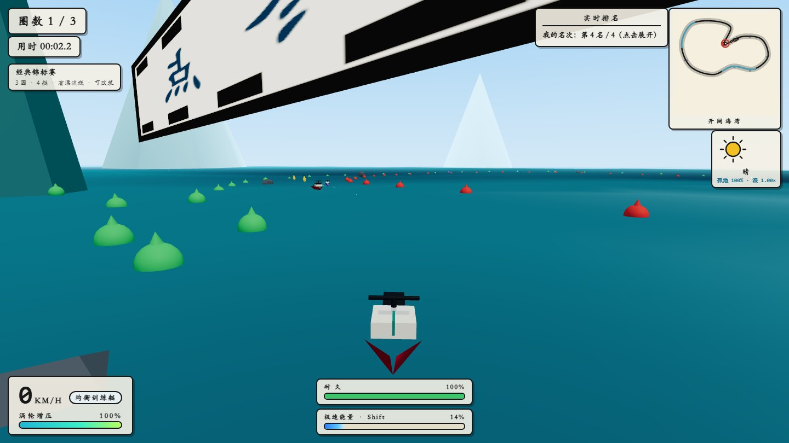

HKY · Original Game 02
Wave Rider浪 尖 竞 速
单文件 3D 水上摩托竞速。四层核心循环——瞬间操作、单局名次、单次游玩、长期成长；6 艇型、6 水域、5 模式，以及 195 项内容注册表启动自检。程序化水面与水墨 UI。
建议离线版：零网络请求，所有资源都在同一个 HTML 内；在线版从 CDN 加载 Three.js r160。进度保存在当前浏览器。
← 返回作品集
HKY · Original Game 02
单文件 3D 水上摩托竞速。四层核心循环——瞬间操作、单局名次、单次游玩、长期成长；6 艇型、6 水域、5 模式，以及 195 项内容注册表启动自检。程序化水面与水墨 UI。
建议离线版：零网络请求，所有资源都在同一个 HTML 内；在线版从 CDN 加载 Three.js r160。进度保存在当前浏览器。
← 返回作品集